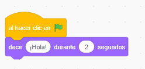

¿Cómo funcionan las estructuras secuenciales en Scratch?
En Scratch las estructuras secuenciales son los bloques de piezas que se generan en el programa.
Por ejemplo, el siguiente programa es una estructura secuencial:

Esta estructura está formada por dos instrucciones (pieza amarilla, al hacer clic y pieza morada, decir hola). Es una estructura secuencial porque primero se ejecuta el clic y después decir "hola" durante dos segundos